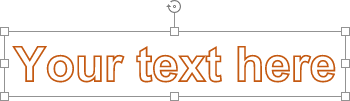
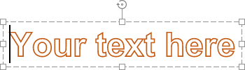
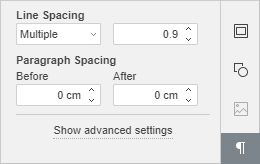
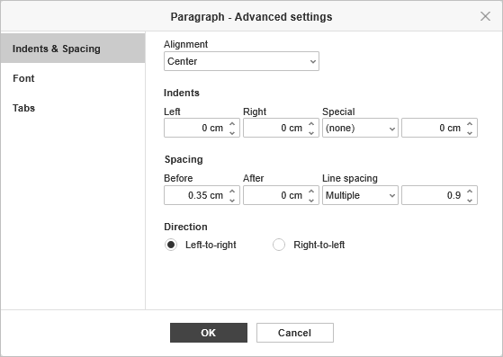
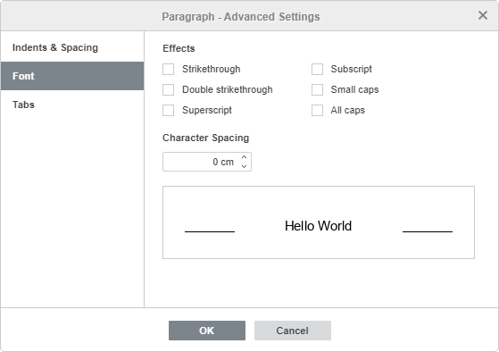
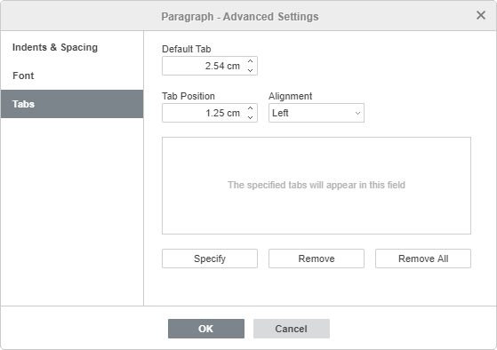
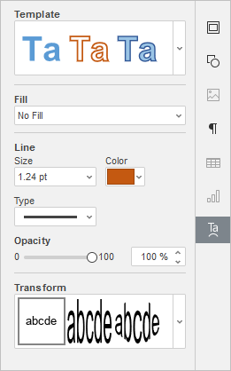
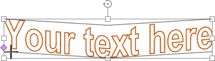

Umetnite i formatirajte tekst
Umetnite tekstualni okvir u prezentaciju
U Presentation Editor-u možete dodati novi tekst na tri različita načina:
- Dodajte tekst u odgovarajući držač teksta na rasporedu slajda. Da biste to uradili, postavite kursor unutar držača i unesite tekst ili ga nalepite pomoću kombinacije tastera Ctrl+V umesto podrazumevanog teksta.
-
Dodajte tekst bilo gde na slajdu. Možete umetnuti tekstualni okvir (pravougaoni okvir koji omogućava unos teksta) ili Text Art objekat (tekstualni okvir sa unapred definisanim stilom fonta i bojom koji omogućava primenu tekstualnih efekata). U zavisnosti od potrebnog tipa tekstualnog objekta, možete uraditi sledeće:
-
da biste dodali tekstualni okvir, kliknite na ikonicu Text Box na tabu Home ili Insert na gornjoj alatnoj traci, izaberite jednu od sledećih opcija: Insert horizontal text box ili Insert vertical text box, zatim kliknite na mesto gde želite da umetnete tekstualni okvir, držite taster miša i prevucite ivicu okvira da biste definisali njegovu veličinu. Kada otpustite taster miša, pojaviće se mesto za unos teksta.
Tekstualni okvir je moguće umetnuti i klikom na ikonicu Shape na gornjoj alatnoj traci i izborom oblika iz grupe Basic Shapes.
- da biste dodali Text Art objekat, kliknite na ikonicu Text Art na tabu Insert na gornjoj alatnoj traci, zatim kliknite na željeni stil – Text Art objekat će biti dodat u centar slajda. Izaberite podrazumevani tekst u okviru i zamenite ga sopstvenim.
-
da biste dodali tekstualni okvir, kliknite na ikonicu Text Box na tabu Home ili Insert na gornjoj alatnoj traci, izaberite jednu od sledećih opcija: Insert horizontal text box ili Insert vertical text box, zatim kliknite na mesto gde želite da umetnete tekstualni okvir, držite taster miša i prevucite ivicu okvira da biste definisali njegovu veličinu. Kada otpustite taster miša, pojaviće se mesto za unos teksta.
- Dodajte tekst unutar automatskog oblika. Izaberite oblik i počnite da kucate tekst.
Kliknite van tekstualnog objekta da biste primenili izmene i vratili se na slajd.
Tekst unutar tekstualnog objekta je njegov sastavni deo (kada pomerate ili rotirate tekstualni objekat, tekst se pomera ili rotira zajedno sa njim).
Pošto umetnuti tekstualni objekat predstavlja pravougaoni okvir (sa podrazumevano nevidljivim ivicama) sa tekstom u njemu i taj okvir je ujedno i automatski oblik, možete menjati i svojstva oblika i svojstva teksta.
Tekstualni okvir možete sačuvati kao sliku na računaru koristeći opciju Save as picture iz kontekstnog menija.
Da biste obrisali dodati tekstualni objekat, kliknite na ivicu tekstualnog okvira i pritisnite taster Delete. Tekst unutar tekstualnog okvira će takođe biti obrisan.
Formatiranje tekstualnog okvira
Izaberite tekstualni okvir klikom na njegovu ivicu da biste promenili njegova svojstva. Kada je tekstualni okvir izabran, njegove ivice su prikazane punim (ne isprekidanim) linijama.

- da biste promenili veličinu, pomerili ili rotirali tekstualni okvir, koristite specijalne ručice na ivicama oblika.
- da biste uredili ispunu, liniju, zamenili pravougaoni okvir drugim oblikom ili pristupili naprednim podešavanjima oblika, kliknite na ikonicu Shape settings na desnoj bočnoj traci i koristite odgovarajuće opcije.
- da biste poravnali tekstualni okvir na slajdu, rotirali ili okrenuli ga, rasporedili tekstualne okvire u odnosu na druge objekte, kliknite desnim tasterom miša na ivicu tekstualnog okvira i koristite opcije kontekstnog menija.
- da biste kreirali kolone teksta unutar tekstualnog okvira, kliknite na odgovarajuću ikonicu na traci za formatiranje teksta i izaberite željenu opciju ili kliknite desnim tasterom miša na ivicu tekstualnog okvira, izaberite Shape Advanced Settings i pređite na tab Columns u prozoru Shape - Advanced Settings.
Formatiranje teksta unutar tekstualnog okvira
Kliknite na tekst unutar tekstualnog okvira da biste promenili njegova svojstva. Kada je tekst izabran, ivice tekstualnog okvira su prikazane isprekidanim linijama.

Napomena: moguće je promeniti formatiranje teksta i kada je izabran ceo tekstualni okvir (a ne sam tekst). U tom slučaju, sve promene će biti primenjene na ceo tekst u okviru. Neke opcije formatiranja fonta (vrsta fonta, veličina, boja i stilovi) mogu se primeniti zasebno na prethodno izabrani deo teksta.
Poravnajte tekst unutar tekstualnog okvira
Tekst se horizontalno poravnava na četiri načina: levo, desno, centrirano ili obostrano. Da biste to uradili:
- postavite kursor na mesto gde želite da primenite poravnanje (to može biti novi red ili već unet tekst),
- otvorite padajuću listu Horizontal align na tabu Home na gornjoj alatnoj traci,
-
izaberite tip poravnanja koji želite da primenite:
- opcija Align text left omogućava poravnanje teksta uz levu ivicu tekstualnog okvira (desna ivica ostaje neporavnata).
- opcija Align text center omogućava poravnanje teksta po sredini tekstualnog okvira (leva i desna ivica ostaju neporavnate).
- opcija Align text right omogućava poravnanje teksta uz desnu ivicu tekstualnog okvira (leva ivica ostaje neporavnata).
- opcija Justify omogućava poravnanje teksta i uz levu i uz desnu ivicu tekstualnog okvira (razmaci se po potrebi prilagođavaju).
Napomena: ovi parametri su dostupni i u prozoru Paragraph - Advanced Settings.
Tekst se vertikalno poravnava na tri načina: gore, sredina ili dole. Da biste to uradili:
- postavite kursor na mesto gde želite da primenite poravnanje,
- otvorite padajuću listu Vertical align na tabu Home na gornjoj alatnoj traci,
-
izaberite tip poravnanja koji želite da primenite:
- opcija Align text to the top omogućava poravnanje teksta uz gornju ivicu tekstualnog okvira.
- opcija Align text to the middle omogućava poravnanje teksta po sredini tekstualnog okvira.
- opcija Align text to the bottom omogućava poravnanje teksta uz donju ivicu tekstualnog okvira.
Promenite smer teksta
Da biste rotirali tekst unutar tekstualnog okvira, kliknite desnim tasterom miša na tekst, izaberite opciju Text Direction i zatim jednu od dostupnih opcija: Horizontal (podrazumevano), Rotate Text Down (vertikalni smer odozgo nadole) ili Rotate Text Up (vertikalni smer odozdo nagore).
Da biste omogućili podršku za tekst zdesna nalevo ili obrnuto, kliknite na dugme Text direction na tabu Home i izaberite potreban smer.
Podesite vrstu fonta, veličinu, boju i primenite stilove formatiranja
Možete izabrati vrstu fonta, veličinu i boju, kao i primeniti različite stilove formatiranja fonta koristeći odgovarajuće ikonice na tabu Home na gornjoj alatnoj traci.
Napomena: ako želite da primenite formatiranje na tekst koji je već prisutan u prezentaciji, izaberite ga mišem ili koristite tastaturu i primenite formatiranje. Takođe možete postaviti kursor unutar željene reči da biste formatiranje primenili samo na tu reč.
| Font | Koristi se za izbor jednog od fontova sa liste dostupnih fontova. Ako traženi font nije dostupan na listi, možete ga preuzeti i instalirati na svom operativnom sistemu, nakon čega će font biti dostupan za upotrebu u desktop verziji. | |
| Veličina fonta | Koristi se za izbor unapred definisanih vrednosti veličine fonta iz padajuće liste (podrazumevane vrednosti su: 8, 9, 10, 11, 12, 14, 16, 18, 20, 22, 24, 26, 28, 36, 48, 72 i 96). Takođe je moguće ručno uneti prilagođenu vrednost do 300 pt u polje za veličinu fonta. Pritisnite Enter za potvrdu. | |
| Povećaj veličinu fonta | Koristi se za promenu veličine fonta tako što se ona uvećava za jedan poen svaki put kada se pritisne dugme. | |
| Smanji veličinu fonta | Koristi se za promenu veličine fonta tako što se ona smanjuje za jedan poen svaki put kada se pritisne dugme. | |
| Promeni veličinu slova | Koristi se za promenu veličine slova u tekstu. Sentence case. – velika početna slova rečenice. lowercase – sva slova su mala. UPPERCASE – sva slova su velika. Capitalize Each Word – svaka reč počinje velikim slovom. tOGGLE cASE – obrće veličinu slova u izabranom tekstu ili reči na kojoj se nalazi kursor miša. | |
| Boja isticanja | Koristi se za isticanje pojedinačnih rečenica, fraza, reči ili čak znakova dodavanjem obojene trake koja imitira efekat markera kroz tekst. Možete izabrati željeni deo teksta i kliknuti na strelicu nadole pored ikonice da biste izabrali boju iz palete (ovaj skup boja ne zavisi od izabrane Color scheme i sadrži 16 boja) – boja će biti primenjena na izabrani tekst. Alternativno, možete prvo izabrati boju isticanja, a zatim početi da birate tekst mišem – pokazivač miša će izgledati ovako i moći ćete redom da istaknete više različitih delova teksta. Da biste prekinuli isticanje, jednostavno ponovo kliknite na ikonicu. Da biste uklonili boju isticanja, izaberite opciju No Fill. | |
| Boja fonta | Koristi se za promenu boje slova/znakova u tekstu. Kliknite na strelicu nadole pored ikonice da biste izabrali boju. | |
| Podebljano | Koristi se za podebljavanje fonta, čime tekst dobija izraženiji izgled. | |
| Iskošeno | Koristi se za blago iskošavanje fonta udesno. | |
| Podvučeno | Koristi se za podvlačenje teksta linijom ispod slova. | |
| Precrtano | Koristi se za precrtavanje teksta linijom koja prolazi kroz slova. | |
| Eksponent | Koristi se za umanjenje teksta i njegovo postavljanje u gornji deo reda teksta, npr. kao kod razlomaka. | |
| Indeks | Koristi se za umanjenje teksta i njegovo postavljanje u donji deo reda teksta, npr. kao u hemijskim formulama. |
Podesite razmak između redova i promenite uvlačenja pasusa
Možete podesiti visinu reda za tekstualne redove unutar pasusa, kao i razmake između trenutnog i prethodnog ili sledećeg pasusa.

Da biste to uradili,
- postavite kursor unutar željenog pasusa ili izaberite više pasusa pomoću miša,
-
koristite odgovarajuća polja na kartici Podešavanja pasusa na desnoj bočnoj traci da biste postigli željene rezultate:
- Razmak između redova – podešava visinu reda za tekstualne redove unutar pasusa. Možete izabrati jednu od dve opcije: multiple (podešava razmak između redova izražen brojevima većim od 1), exactly (podešava fiksni razmak između redova). Potrebnu vrednost možete uneti u polje sa desne strane.
-
Razmak pasusa – podešava količinu prostora između pasusa.
- Pre – podešava količinu prostora ispred pasusa.
- Posle – podešava količinu prostora iza pasusa.
Napomena: ovi parametri su dostupni i u prozoru Paragraph - Advanced Settings.
Da biste brzo promenili razmak između redova u trenutnom pasusu, možete koristiti i ikonicu Razmak između redova pasusa na tabu Home na gornjoj alatnoj traci, birajući potrebnu vrednost sa liste: 1.0, 1.15, 1.5, 2.0, 2.5 ili 3.0 reda, kao i otvoriti odgovarajući desni panel klikom na stavku menija Line spacing options.
Da biste promenili uvlačenje pasusa sa leve strane tekstualnog okvira, postavite kursor unutar željenog pasusa ili izaberite više pasusa pomoću miša i koristite odgovarajuće ikonice na tabu Home na gornjoj alatnoj traci: Smanji uvlačenje i Povećaj uvlačenje .
Podesite napredna podešavanja pasusa
Da biste otvorili prozor Paragraph - Advanced Settings, kliknite desnim tasterom miša na tekst i izaberite opciju Paragraph Advanced Settings iz menija. Takođe možete postaviti kursor unutar željenog pasusa – kartica Podešavanja pasusa će se aktivirati na desnoj bočnoj traci. Kliknite na vezu Show advanced settings. Otvoriće se prozor sa svojstvima pasusa:

Kartica Indents & Spacing vam omogućava da:
- promenite tip poravnanja teksta pasusa,
-
promenite uvlačenja pasusa u odnosu na unutrašnje margine tekstualnog okvira,
- Levo – podešava pomeraj pasusa od leve unutrašnje margine tekstualnog okvira unosom potrebne numeričke vrednosti,
- Desno – podešava pomeraj pasusa od desne unutrašnje margine tekstualnog okvira unosom potrebne numeričke vrednosti,
- Specijalno – podešava uvlačenje za prvi red pasusa: izaberite odgovarajuću stavku menija ((none), First line, Hanging) i promenite podrazumevanu numeričku vrednost navedenu za First Line ili Hanging,
- promenite razmak između redova pasusa,
- promenite smer teksta sa left-to-right na right-to-left i obrnuto.
Takođe možete koristiti horizontalni lenjir za podešavanje uvlačenja.
Izaberite potrebne pasuse i prevucite markere za uvlačenje duž lenjira.
- Marker First Line Indent koristi se za podešavanje pomeraja prvog reda pasusa od leve unutrašnje margine tekstualnog okvira.
- Marker Hanging Indent koristi se za podešavanje pomeraja drugog i svih narednih redova pasusa od leve unutrašnje margine tekstualnog okvira.
- Marker Left Indent koristi se za podešavanje pomeraja celog pasusa od leve unutrašnje margine tekstualnog okvira.
- Marker Right Indent koristi se za podešavanje pomeraja pasusa od desne unutrašnje margine tekstualnog okvira.
Napomena: ako ne vidite lenjire, pređite na tab Home na gornjoj alatnoj traci, kliknite na ikonicu View settings u gornjem desnom uglu i isključite opciju Hide Rulers da biste ih prikazali.

Kartica Font sadrži sledeće parametre:
- Strikethrough se koristi za precrtavanje teksta linijom koja prolazi kroz slova.
- Double strikethrough se koristi za precrtavanje teksta dvostrukom linijom koja prolazi kroz slova.
- Superscript se koristi za umanjenje teksta i njegovo postavljanje u gornji deo reda teksta, npr. kao kod razlomaka.
- Subscript se koristi za umanjenje teksta i njegovo postavljanje u donji deo reda teksta, npr. kao u hemijskim formulama.
- Small caps se koristi za prikaz svih slova malim slovima.
- All caps se koristi za prikaz svih slova velikim slovima.
-
Character Spacing se koristi za podešavanje razmaka između znakova. Povećajte podrazumevanu vrednost da biste primenili Expanded razmak ili je smanjite da biste primenili Condensed razmak. Koristite strelice ili unesite potrebnu vrednost u polje.
Sve promene će biti prikazane u polju za pregled ispod.

Kartica Tab omogućava promenu tabulatora, odnosno pozicije na koju se kursor pomera kada pritisnete taster Tab.
- Default Tab je postavljen na 2.54 cm. Ovu vrednost možete smanjiti ili povećati pomoću strelica ili uneti potrebnu vrednost u polje.
- Tab Position – koristi se za podešavanje prilagođenih tabulatora. Unesite potrebnu vrednost u ovo polje, preciznije je podesite pomoću strelica i pritisnite dugme Specify. Vaša prilagođena pozicija tabulatora biće dodata na listu u polju ispod.
-
Alignment – koristi se za podešavanje potrebnog tipa poravnanja za svaku poziciju tabulatora na listi iznad. Izaberite potrebnu poziciju tabulatora na listi, odaberite opciju Left, Center ili Right iz padajuće liste Alignment i pritisnite dugme Specify.
- Left – poravnava tekst levo na poziciji tabulatora; tekst se pomera udesno dok kucate. Takav tabulator će biti označen na horizontalnom lenjiru markerom .
- Center – centrira tekst na poziciji tabulatora. Takav tabulator će biti označen na horizontalnom lenjiru markerom .
- Right – poravnava tekst desno na poziciji tabulatora; tekst se pomera ulevo dok kucate. Takav tabulator će biti označen na horizontalnom lenjiru markerom .
Da biste uklonili tabulatore sa liste, izaberite tabulator i pritisnite dugme Remove ili Remove All.
Za podešavanje tabulatora možete koristiti i horizontalni lenjir:
- Kliknite na dugme za izbor tabulatora u gornjem levom uglu radne površine da biste izabrali potreban tip tabulatora: Left , Center , Right .
-
Kliknite na donju ivicu lenjira na mestu gde želite da postavite tabulator. Prevucite ga duž lenjira da biste promenili njegov položaj. Da biste uklonili dodati tabulator, prevucite ga van lenjira.
Napomena: ako ne vidite lenjire, pređite na tab Home na gornjoj alatnoj traci, kliknite na ikonicu View settings u gornjem desnom uglu i isključite opciju Hide Rulers da biste ih prikazali.
Uredite stil Text Art-a
Izaberite tekstualni objekat i kliknite na ikonicu Text Art settings na desnoj bočnoj traci.

- Promenite primenjeni stil teksta izborom novog Template iz galerije. Takođe možete dodatno promeniti osnovni stil izborom druge vrste fonta, veličine itd.
- Promenite ispunu i liniju fonta. Dostupne opcije su iste kao i za automatske oblike.
- Primijenite efekat teksta izborom potrebnog tipa transformacije teksta iz galerije Transform. Stepen deformacije teksta možete podesiti prevlačenjem ručice u obliku ružičastog dijamanta.
